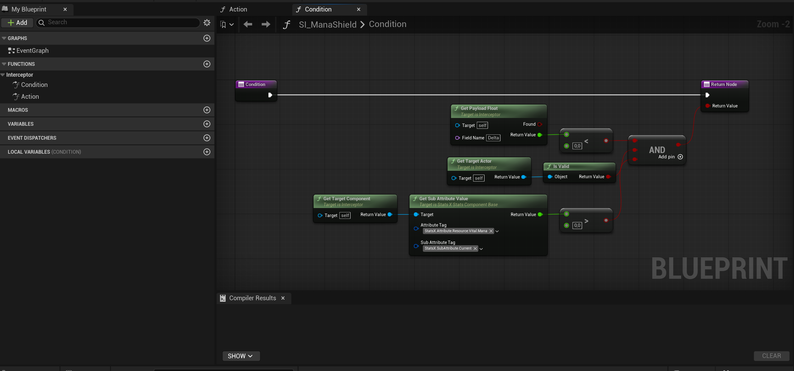
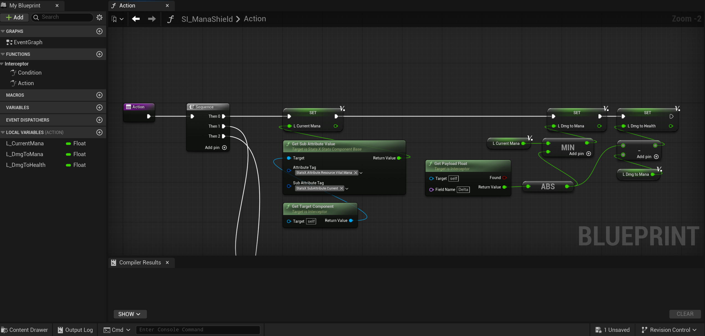
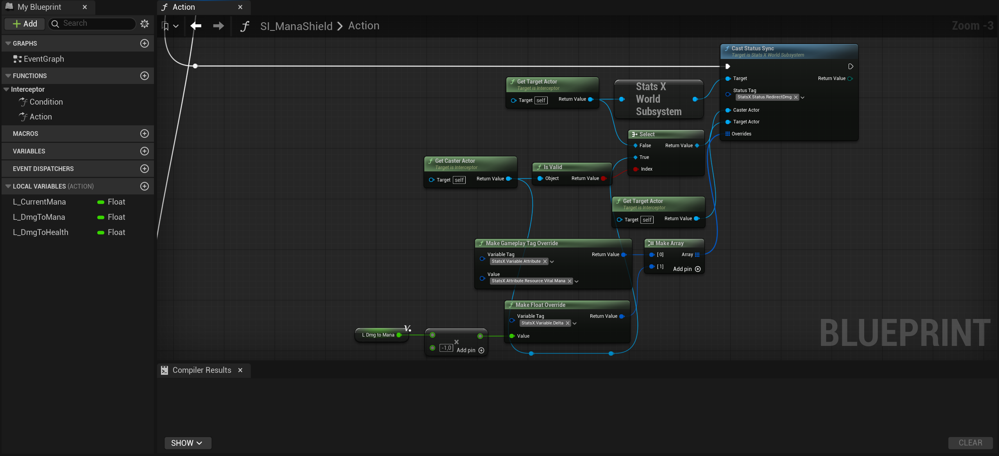
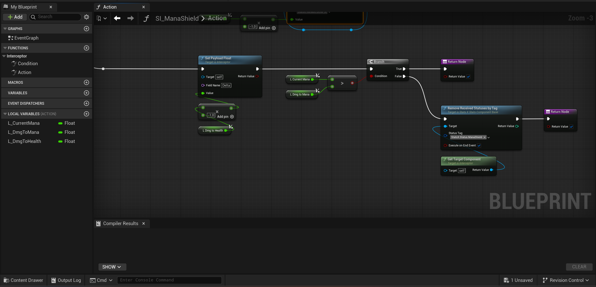

Interceptors let one status react to what another status is doing. They are perfect when you want to observe, filter, modify, or block a gameplay event without rewriting the original status.
In this tutorial we use Mana Shield as the practical example. While Mana Shield is active, incoming health damage will be intercepted before it is applied, and the same amount will be redirected to mana instead.
A status emits an interceptor event. A registered interceptor receives it, checks if it cares about that
event, and then decides what to do in Action.
SF_ManaShield.
An interceptor is a Blueprint class derived from Interceptor / UForgeInterceptorBase.
It has two key functions:
| Function | Role |
|---|---|
Condition |
Decides if this interceptor should react to the current event. |
Action |
Executes the real response. Returning false halts the triggering status execution.
|
Interceptors do nothing unless some status graph actually emits propagation events. Registering an interceptor is only half of the system. The other half is broadcasting the event from the graph that should be intercepted.
For this example, create three statuses:
SF_ManaShield - the status that registers the interceptor.SF_RedirectDelta - a helper status usable everywhere to redirect intercepted damages.SF_Damage - the status that deals damage and we will use to test the interceptor.
SF_ManaShield is the defensive effect you cast on the player. SF_RedirectDelta is just
a simple helper used inside the interceptor action to move the value to mana cleanly in a way that other
interceptors can intercept the damage on mana too.
In the Content Browser, create a new Blueprint class and choose Interceptor as the
parent class.
A name such as SI_ManaShield makes the purpose obvious immediately.
Open SF_ManaShield and register the interceptor from its graph.
Inside the Mana Shield status, place the node UntilDeprecationBehavior with duration = -1 (infinite). This way the status will be an active status, refer to Status Lifecycle tutorial.
Next to the UntilDeprecationBehavior node, in the branch without name, place the node
RegisterLocalInterceptor on the actor that should be protected.
Register it on the player's Stats component, because that is where the target-side interception must happen. So, use GetTargetStatsComponent node as StatsComponentTarget pin.
Use the base registration tag StatsX.Event.Pre.OnHealthDamaged. Do not add the scope
suffix manually here.
Mana Shield should react when the protected actor receives damage, so this interceptor must be registered in Target scope, not Caster scope.
| Registration Setting | Value for Mana Shield | Why |
|---|---|---|
| StatsComponentTarget | GetTargetStatsComponent |
Who owns this interceptor, where the interceptor is stored, attention this is not the scope, is complementary to it. |
| Interceptor Class | SI_ManaShield |
The Blueprint that will react to the event. |
| Event Tag | StatsX.Event.Pre.OnHealthDamaged |
We want to intercept the event before the damage is finalized. |
| bIsCaster | false | This is the scope. The shield belongs to the actor receiving the damage, so no, the scope of the action we are going to intercept is not the Caster. |
| Priority | Any sensible positive value | Higher priority executes earlier if multiple interceptors exist. |
Initially it is tricky to understand how to setup the scope, but think about this:
StatsComponentTarget is the actor owner of the interceptor, so he will be the actor in
Scope.
bIsCaster is the ROLE of the actor in scope.
Event Tag is the event to intercept.
So, you can think... "The interceptor must triggers on EventTag when StatsComponentTarget is in the Role
of bIsCaster"
Open the interceptor Blueprint and override Condition.
For a health-damage event, the useful field is the incoming delta. Read it from the payload using the payload accessor functions exposed by the interceptor, GetPayloadFloat with input FieldName 'Delta'.
In Stats_X, negative delta means damage and positive delta means healing. Mana Shield should only react when the delta is negative.
It is useless to trigger if you know the effect will be none, save performance.

Keeping the filter inside Condition makes the interceptor cheap and clean. If the event is
not real damage, the expensive logic in Action never runs.
Now override Action. This is where Mana Shield performs the redirect.



Registering the interceptor is not enough. The damage status must also broadcast the correct interceptor event.
Find the status graph where health damage is actually applied.
Place CallPropagationPreEvents before the node that modifies Health. This gives
interceptors a chance to react before the value is finalized.
Broadcast StatsX.Event.Pre.OnHealthDamaged.Target so the target-side interceptors of
the
damaged actor are the ones that react.
| What you register | What you broadcast | Why they differ |
|---|---|---|
StatsX.Event.Pre.OnHealthDamaged |
StatsX.Event.Pre.OnHealthDamaged.Target |
The runtime suffix tells the system which registry should receive the event. |
Register with the base tag. Broadcast with the scoped tag. The system strips the suffix internally and routes the event to Caster, Target, or Global interceptors based on that suffix.
For Mana Shield, Pre is the correct phase because you want to catch the health damage before it is committed.
| Phase | When to use it | Note |
|---|---|---|
| Pre | When you want to inspect, modify, or block an operation before it finishes. | Knows Input pins of the next node, does not knows output pins |
| Post | When you want to react after the operation already happened. | Knows both input and output pins of the previous node |
| Scope | Meaning | Example |
|---|---|---|
| Caster | The actor casting the triggering status reacts. | A buff that strengthens the owner's outgoing damage. |
| Target | The actor receiving the triggering status reacts. | Mana Shield protecting the damaged target. |
| Global | The world subsystem reacts regardless of which actor is involved. | Global analytics, logging, or world-wide gameplay rules. |
During Condition and Action, the interceptor can access both source data and
triggering
data.
GetSourceActor / GetSourceComponent tell you who registered this interceptor.GetCasterActor / GetTargetActor tell you who triggered the current event.GetTriggeringStatusID identifies the status currently being intercepted.The source actor is the one that registered the interceptor, while the caster and target accessors refer to the status currently triggering the event. Those are not always the same thing.
When the status that registered the interceptor ends, Stats_X automatically unregisters the interceptors created by that status.
This is important for effects like Mana Shield, because you do not want the interception logic to remain active after the shield has expired.
Post when the logic really needs to stop the event before it happens.false from Action without realizing it halts the triggering status
execution.You are done: you now know how to register an interceptor, filter the right event, react in Blueprint, and make another status emit the propagation event that the interceptor is waiting for.